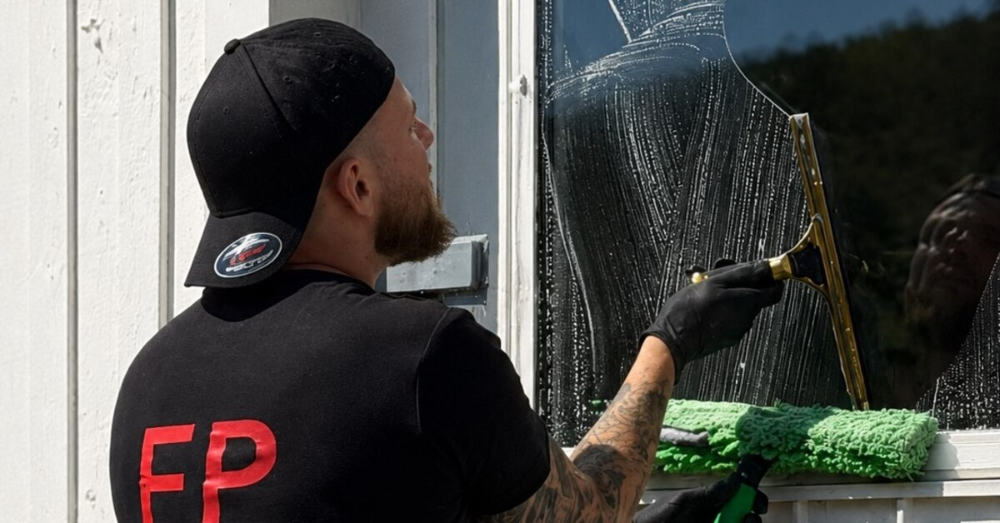

Fönsterputs för villor och lägenheter i Råslätt – fast pris, RUT-avdrag.
Råslätt är en stor stadsdel i Jönköpings södra delar, med både stora bostadskomplex och närliggande villaområden. Jag erbjuder skräddarsydd fönsterputs för privatpersoner i hela området. Smutsiga solceller tvättar jag också – läs hur det går till under solcellstvätt.

Pris för fönsterputs i Råslätt
Lägenhet från 475 kr och villa från 750 kr efter RUT-avdrag, plus 30 kr inställelseavgift. Se alla priser eller läs mer om fönsterputs för villa och fönsterputs för lägenhet.
Ingen anonym personal skickas hem till dig. Du vet alltid vem som sköter ditt hem, från bokning till avslutat jobb.
51 recensioner – alla med högsta betyg. Läs vad kunderna säger på Google.
Inga dolda avgifter. Alltid det pris jag kommit överens om – momsat och klart, oavsett väder eller minusgrader.
Inte helt nöjd med resultatet? Jag kommer tillbaka och åtgärdar det kostnadsfritt – helt enkelt tills du är nöjd.
Ja, jag jobbar med båda delarna i Råslätt – allt från enskilda lägenheter till villor i närområdet.
Enklast är att ringa direkt på 079-346 39 64, eller fylla i mitt offertformulär så återkommer jag samma dag.
De flesta kunder i Råslätt väljer 2–4 gånger per år beroende på läge och väderexponering. Jag hjälper gärna till att lägga upp ett abonnemang så du slipper hålla koll på det själva.
En lägenhet kostar från 475 kr och en villa från 750 kr efter RUT-avdrag, plus en inställelseavgift på 30 kr. Priset beror på antal fönster och hur lätta de är att nå – du får alltid ett fast pris innan jag börjar.
Ja, jag putsar fönster året runt. Vid minusgrader använder jag frostskydd i vattnet så att resultatet blir randfritt även när det är kallt ute.